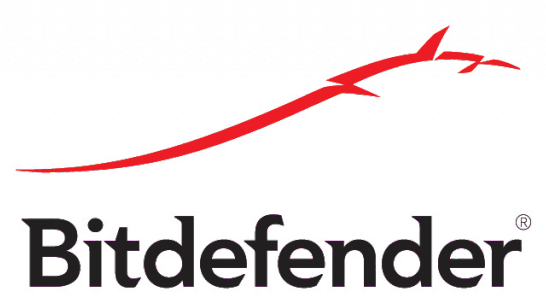
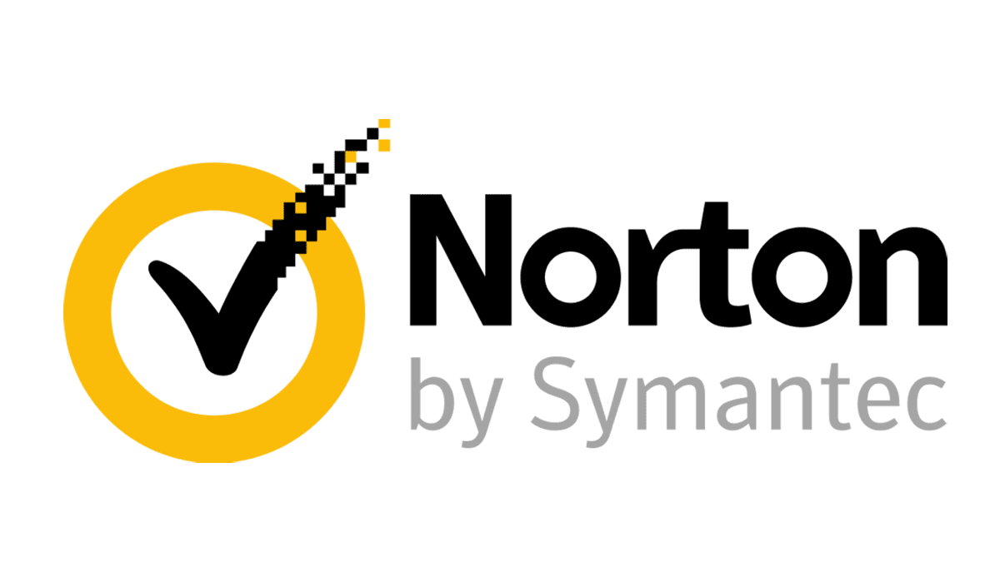
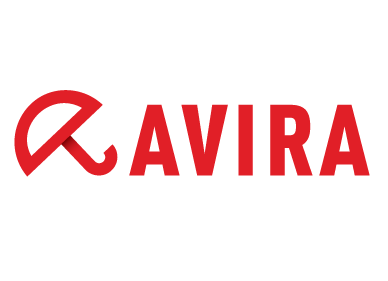
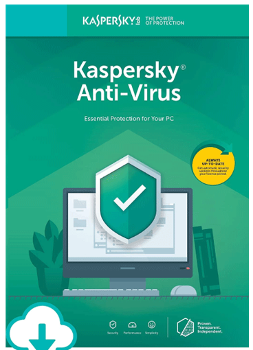
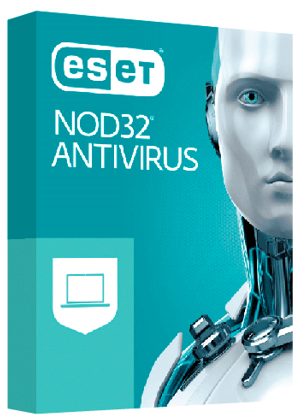

El software antivirus es una aplicación o un conjunto de programas que encuentra y elimina virus de ordenadores y redes. Junto con los virus, la mayoría de los programas de hoy en día también son capaces de detectar y eliminar otros tipos de software malicioso, incluidos los gusanos, los Troyanos, adware, spyware, ransomware, secuestradores de navegador, keylogger y rootkits. Al margen de ser capaces de identificar y eliminar estas amenazas, el mejor software antivirus también puede prevenir que infecten su sistema
El software antivirus es una aplicación o un conjunto de programas que encuentra y elimina virus de ordenadores y redes. Junto con los virus, la mayoría de los programas de hoy en día también son capaces de detectar y eliminar otros tipos de software malicioso, incluidos los gusanos, los Troyanos, adware, spyware, ransomware, secuestradores de navegador, keylogger y rootkits. Al margen de ser capaces de identificar y eliminar estas amenazas, el mejor software antivirus también puede prevenir que infecten su sistema
Hidata: Informática Básica
Antivirus
¿Cómo funcionan los antivirus?
La mayoría de los programas usará tres dispositivos de detección diferentes: detección específica, la cual identifica el malware conocido; detección genérica, la cual busca partes o tipos de malware conocido, o patrones que se relacionan en virtud de una base de código común; y detección heurística, la cual escanea virus desconocidos al identificar estructuras de archivos sospechosas conocidas. Cuando el programa encuentra un archivo que contiene un virus, generalmente lo pone en cuarentena y/o lo aparta para eliminarlo, lo que lo hace inaccesible y permite eliminar el riesgo de tu aparato.
Características de los antivirus
Hay muchos tipos de antivirus y todos varían en sus funciones y manejo , la mayoría cumple las siguientes características:
- Capacidad de detención de virus.
- Capacidad de eliminación de infecciones.
- Capacidad actualización de las bases de datos para detectar nuevos virus.
- Integración con el correo electrónico.
- Capacidad de creación de copias de seguridad o back-ups.
- Capacidad de detención de otros tipos de malware y peligros como Spam, spyware, phishing.
- Servicio de atención al cliente y apoyo técnico.
Tipos de antivirus.
Bitdefender

Bitdefender es un fabricante rumano de programas antivirus que ofrece varios packs diferentes de software para usuarios particulares y empresas. Con sus productos de pago y multiplataforma como Small Office Security, Premium Security o Total Security, Bitdefender ofrece altos niveles de calidad en cuanto a seguridad, gama de funciones y manejo del programa, pero a precios elevados.
Norton de NortonLifeLock
Norton engloba a una serie de antivirus del fabricante de software estadounidense NortonLifeLock (antes Symantec). Los productos de pago de la gama Norton Security tienen un alto estándar de calidad y ofrecen a los usuarios una protección sin igual para varios dispositivos, un abanico de prestaciones muy amplio, un diseño intuitivo de la navegación y diversas opciones de atención al cliente a precios relativamente asequibles. Las ventajas más importantes de este software antivirus pueden resumirse en estos puntos:
Avira

Avira antivirus es un programa antivirus muy ligero que te ofrece un conjunto completo de herramientas fáciles de usar para todos los dispositivos principales, incluyendo PC, Mac, Android e iOS.
Avira incluye todas las herramientas de seguridad necesarias que deberían proporcionar una buena protección contra los virus para el año 2020, incluyendo el escaneo en tiempo real, la prevención del chantaje y la seguridad de la red.
Karpesrky

Diseñado para proteger a los usuarios del malware y está diseñado principalmente para computadoras que ejecutan Microsoft Windows y macOS , aunque hay una versión para Linux disponible para consumidores comerciales, incluye protección en tiempo real, detección y eliminación de virus , troyanos , gusanos , spyware , adware , keyloggers , herramientas maliciosas y marcadores automáticos, así como detección y eliminación de rootkits .
Malwarebytes
Malwarebytes sirve para proteger el PC de amenazas informáticas como los virus. El programa confiere una protección por software bastante alta y cubre una gran parte de las amenazas existentes, y la gran mayoría de las que circulan por la red a diario. Con él podemos analizar el PC en busca de malware y ransomware. El malware típico cubre virus de todo tipo, incluyendo troyanos, mientras que el ransomware busca archivos personales y los bloquea con el fin de obtener dinero a cambio de su desbloqueo.
ESET NOD32 Antivirus

ESET NOD32 es un programa antivirus desarrollado por la empresa ESET, de origen eslovaco. El producto está disponible para Windows, Linux, FreeBSD, Solaris, Novell y Mac OS X, y tiene versiones para estaciones de trabajo, dispositivos móviles (Windows Mobile y Symbian), utiliza un motor unificado llamado ThreatSense® Technology que permite la detección en tiempo real de nuevas amenazas y virus nuevos aún no catalogados, analizando el código de ejecución en busca de las intenciones malignas de alguna aplicación de malware la detección basada en firmas y heurística avanzada ESET NOD32 Antivirus es capaz de detectar códigos maliciosos, como virus, troyanos, rootkits, gusanos y spyware, entre otros tipos de malware.
Relacione las imágenes de acuerdo a su criterio
Obra publicada con Licencia Creative Commons Reconocimiento Compartir igual 4.0